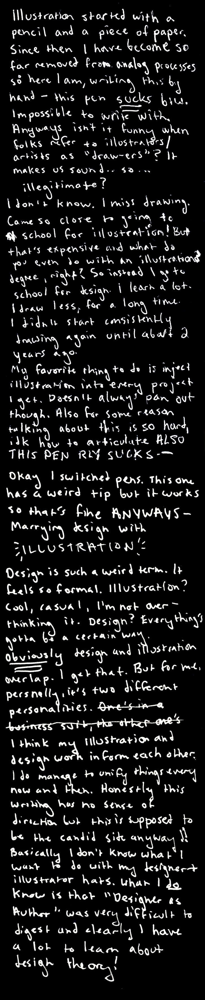

DESIGNER AS ILLUSTRATOR
DESIGNER
As longwinded and word-heavy as Michael Rock's essay is, it was the only thing I've read where a designer acknowledged children books and graphic novels. "Many illustrators have used the book in wholly inventive ways and produced serious work."
Some people view illustration as something that is very separate from the realm of design. When I was applying to the graphic design program at Purchase I asked if there would be opportunities to produce illustrated work. I was told to switch to painting and drawing. Did I do that? No. Instead I squeezed illustration into every graphic design project that I could.
Scrolling through twitter is funny because artists are constanly complaining about relatives asking them to design business cards and logos. The general public often fails to differentiate between artist and designer. So what if you're both? That's how I consider myself. It says Designer + Illustrator right on my resume. Yet for some reason it's invoked some bizarre, artistic identity crisis. My design work informs my illustration work and vice versa, but at the same time it feels like wearing two completely different hats.
Of course design incorporates illustration. Or rather, it can. However there are so many different "types" and "styles" and purposes for illustration. There's design as illustration, and illustration as design. I think there's a lot more interpretations of what illustration actually is in terms of design as well. Someone may craft something without doing any actual drawing and call it illustration. There are plenty of vector graphics we could call illustration even though they were made by clicking and dragging with a mouse. Ask a comic artist what they consider illustration to be and they'll think more along the lines of drawing by hand - circles back around to the whole children's book piece. It's interesting that Michael points out illustrators use the book format in "inventive" ways in order to produce "serious work." What classifies something as non-inventive? And is something non-inventive therefore not serious? Is illustration not to be considered design unless it is inventive? It sounds like I'm trying to hit the word count for an essya, but I'm just trying to make sense of it all. Where does a graphic novel artist stand in the world of design? Graphic novels as a medium are certainly considered low-brow in a majority of cases when compared to other forms of design.
"DRAWER"
